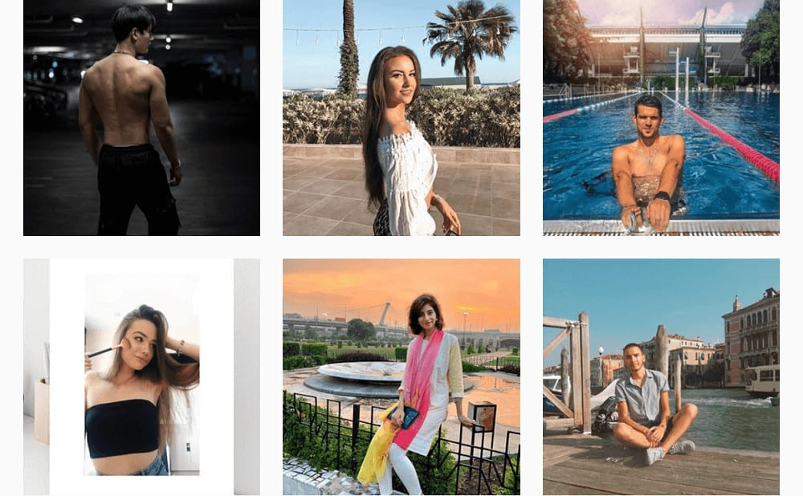
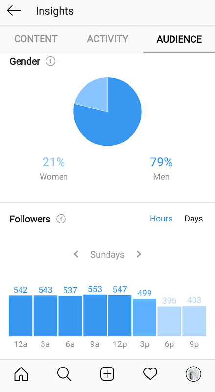

Instagram models. Those familiar with the app have undoubtedly stumbled across this demographic. In fact, being the saturated market that they are, these profiles are near impossible to avoid.
You know the kind: the often picture-perfect, glamorous, strikingly beautiful faces of the platform. These profiles harness thousands of followers by the month, with a lifestyle and aesthetic akin to that of a Pinterest board.
So What is This “Instagram Models” Trend?
Instagram models are exactly as their title describes them: attractive figures who upload perfectly-posed photos on Instagram, often advertising a place, product, or service.

They’ve built themselves a large, active online presence, backed by a large sum of followers. Success in this digital career is immediately correlated to the numbers gained in their audience count. Like real-life models, their content often caters to a certain niche, such as fitness or high-fashion.
In comparison to traditional industry models, an Instagram model’s life is relatively more accessible. Given that anyone can create an Instagram account, anyone who does has the potential of joining the “Instagram models” trend.
But how exactly does this lifestyle pay?
Making Money as an Instagram Model
An Instagram model’s life profits from two main income sources: product brand deals and travel brand deals.
Let’s dive into how either works, and how one acquires them.
Product Brand Deals
You’ve likely come across a post from an attractive influencer, raving about their favourite brand of makeup or having discovered a detox tea that “really works!”
Chances are, these photos are sponsored by the original company. Once an Instagram model gains enough traction on the platform, sporting an impressive sum of followers; brands in their niche will see their audience as a lucrative marketing opportunity.
Courtesy of sherlockdiary (Instagram account).
They pay the model top dollar to have their products mentioned or reviewed. This creates a win-win scenario: the model gets acknowledged by the company’s audience base, and the brand gets their stuff advertised to thousands of potential consumers.
This practice has been termed “influencer marketing”, and extends beyond the realm of models. Generally, anyone with a high follower count can acquire a brand deal and turn a profit on both ends.
Travel Brand Deals
Other than tangible, physical products, some brands may even pay a model (or influencer!) to visit a certain destination. The model is then paid to snap captivating pictures of their adventures, highlighting the most enticing aspects of the location.

These types of posts are commonplace on the platform. They often portray the Instagram model’s life as one full of excitement and experience; as the person uploads shot-after-shot of cocktails on the beach, visits at the Eiffel Tower, and bikini-clad selfies in striking blue waves.
Like product deals, an Instagram model requires a substantial following (and thus, higher consumer influence) to get paid for their travels. However, this option has the added perk of getting to experience amazing places and cultures around the globe.
The Truth Behind the Glamour
As alluring as an Instagram model’s life may seem, we often forget that these are just ordinary people, working any other full-time job.
Many are quick to assume that Instagram models live a 24/7 high-lifestyle, when much of the “perfection” is fabricated or staged.
In late 2015, Instagram model Rebecca Pearson wrote a Telegraph article exposing the truth behind her “glamorous” shots. The young up-and-coming influencer promotes herself as an athletic, healthy-eating traveller with a penchant for reading Dostoevsky.
Courtesy of 1rebeccapearson (Instagram account).
While these characteristics may very well be true, her online photos serve as an exaggerated, oftentimes fabricated, version of this life, as she would later explain.
The whole ordeal took an ultimate toll on Pearson. She revealed that most photos take a draining number of takes to get the “ideal” shot, that most “spontaneity” is likely staged, and that the never-ending toil of staying relevant leads to general exhaustion and resentment for the game.
Like with any other job, an Instagram model’s life involves much hard work. However, these guys get the added pressure of joining the “likes” race; in an attempt to gain clients’ attention and stay ahead of the competition.
Tips for Becoming a Successful Instagram Model
Think this line of work is cut out for you? Those ready to get their social media savviness on can use the following tips to grow a large, engaged following as an Instagram model.
Define Your Unique Niche and Style
Your first step is to figure out what community you’ll be catering to. Is it fitness? Travel? Fashion and beauty?
The most successful Instagram stars, models or otherwise, know their niche and market it well. This helps you in determining the brands you’ll partner up with in the future, and helps set clear-cut goals for your content.

Courtesy of allegrashaw (Instagram account).
By hopping on the Instagram models trend, you’re also need what any traditional model has: an impressive, eye-catching portfolio.
Your profile feed serves this very function. By having a defined, unique style across your photos, you’ll create a striking portfolio that’s sure to catch the attention of brands and talent scouts across the platform.
Ensure High Quality Photographs
You’re less likely to find work as a regular model without a folder of well-taken photographs; and Instagram is no different.
In contrast to other well-known social media beasts, such as Facebook, Youtube, or Twitter – Instagram’s prime focus is on quality images and videos. Therefore, to find success in this realm, you’ve got to bring your best visual content forward.
Courtesy of gizemnsevinc (Instagram account).
This is doubly true for models, who build careers on beautifully-taken photographs of themselves. Ensure your feed is comprised of well-lit, crisp and clear, well-compositioned pictures of you and your ventures; which successfully market your photogenic looks and the theme of the photo.
Of course, it never hurts to take a selfie every once in a while – this creates a likeable feeling of authenticity among your followers.
Interact with the Instagram Model Community
While content is key on Instagram, it’s still a social media platform, after all.
Take the time to reach out to others in your field, whether it’s to leave a simple like, or even an appreciative comment or two. This not only engages you with the community, but establishes an active, relevant presence among your target audience.
A common practice among influencers (or brands) is to leave comments on the profiles of their competitors. Though the original poster may not always reply, this gives you visibility among those who follow them. Capture enough attention, and you’ll likely gain a few new fans from their existing audience.
In time, you may make a handful of new friends or business connections, along with a steady increase in followers.
Courtesy of allegreshaw (Instagram account).
Of course, never neglect your own audience. Take time to leave likes or reply to the comments they leave you – this makes them feel valued, and boosts their loyalty as a result.
Collaborate With Other Instagram Models or Photographers
For faster growth, try teaming up with other up-and-coming figures in your industry.
By collaborating with users of bigger followings, you’re given the opportunity to tap into their audience – meaning greater engagement for your content. This is why it’s important to stay engaged with competitors in your industry; you never know when a friendly greeting could result in a full-blown partnership down the line.
Collaborating with other models can be as simple as taking a selfie together, or by doing a joint promotion, or by arranging interviews. Working with photographers may require shelling out a bit of cash for their services – or you can request for a trade-for-print exchange.
Have a Consistent Schedule
As we mentioned, being a full-time Instagram model means you’ll be working a full-time job, with the added bonus of constant competition.
This means being on top of your game, consistently. You can’t expect an increasing rise in followers without maintaining relevance, which can only be achieved through regularly uploading content.
By ensuring weekly (or in some cases, daily) posts, you remain active among fans and display a strong work ethic towards brands and potential clients.
An easy way of keeping your feed updated on a steady, frequent basis is to use an Instagram scheduler. One of the best, free tools available for this is Later, a marketing platform that not only helps you schedule your posts, but allows you to visually plan them, too.

Courtesy of Later.
Their user-friendly, drag-and-drop interface makes the app incredibly convenient to use, with team management and analytics features to boot.
Ensure Consistent Growth
Finding success on the platform is an uphill climb, and you’ve got to keep improving yourself each time.
If you aren’t evolving for the better, you’re unlikely to witness the growth you’re after. Know your best times to post (Instagram Insights can help greatly with this), discover what works and what doesn’t, and when necessary – listen to your audience.

While content is undoubtedly a top priority on this platform, so is your progress as an influencer. The app is full of Instagram models trying to make it, so be sure you’re constantly finding ways to stand out.
Five Stunning Instagram Models to Inspire You
We’ve gone through the basics of being a successful Instagram model – now learn from the best.
Sommer Ray (@sommerray)
Sommer Ray is a well-renowned figure in the world of Instagram models, having amassed a total of 21.8 million followers,since writing this article.

Courtesy of sommerray (Instagram account).
The 22-year old had her first start on the platform in 2015. She began by uploading content as a fitness model. In fact, the young Instagram star participated in bodybuilding competitions since the mere age of 16. Her feed continues to promote this, displaying photos in her latest swimsuit, workout gear, or training at the gym.

Courtesy of sommerray(Instagram account).
Ray has now expanded beyond her Instagram modelling to create Youtube content; an outlet for her to show off her vibrant personality, rather than just her physique. This channel has allowed her to relate better to fans, giving them insights behind-the-scenes and a dive into more “authentic” life moments.
Evita Nuh (@nuhevita)
A trend-setting blogger in the fashion world, the Indonesian style star Evita Nuh has made waves with her unconventional, playful fashion choices.
Courtesy of nuhevita (Instagram account).
Her aesthetic knows no rules, boasting splashes of color, patterns, and varying styles. Her feed may transition from pretty pastels to brightly-colored 90’s outfits, to the elegance of flowy maxi dresses. The young model has an evident passion for all things fashion, and she isn’t afraid to show it.
Courtesy of nuhevita (Instagram account).
At the time of this article, her account sits at 73.9 thousand followers, a number that’s only set to increase in time.
Rain Dove (@raindovemodel)
In the world of Instagram models, there’s no one quite like Rain Dove. Finding internet success through their gender-nonconforming ideals, Dove has posed as both male and female in photoshoots and runway shows.
The groundbreaking fashion icon labels themselves as a “gender capitalist”, claiming that they’re content with whatever pronouns they’re addressed with, as long as they’re used with positivity.
Courtesy of raindovemodel (Instagram account).
Dove’s Instagram displays a wide variety of content; from artistic shoots that show off their subversive taste in style, to text images that share their thoughts on social issues and politics.

Courtesy of raindovemodel (Instagram account).
Their feed is an inspiring one; not just for the fashion – but for their passionate involvement in activism and relevant political affairs. At the time of this article, Dove sports a total of 346 thousand followers, and it’s easy to see why.
Venita Aspen (@venitaaspen)
Venita Aspen embodies all that positive, picture-perfect, and glamorous with her feed; displaying a collection of vibrant photographs, from fashion shots to travel adventures.
Courtesy of venitaaspen (Instagram account).
Her profile offers a stunning portfolio of her chic, elegant style, often with a backdrop of a city, beach, or suburban town. Her shots unfailingly display her love of life and feminine aesthetics – you just can’t help but feel good vibes while scrolling through.
Courtesy of venitaaspen (Instagram account).
Aspen also promotes her exclusive online modelling portfolio in her bio, along with a business e-mail for potential clients. As of now, she currently holds 15.3 thousand followers, with plenty more to surely come her way.
Grow Your Following as an Instagram Model!
Building a large, loyal following can your biggest hurdle as a beginner Instagram model.
Luckily, online marketing services now exist to bolster the presence of aspiring influencers. One of the best ones available for free is Socialfollow – a platform that grows your profile by the thousands each month.

Courtesy of Socialfollow.
There are no fees, surveys, or private login information required – simply sign up with your e-mail to become a part of the Socialfollow program. You’ll then be required to define your niche, generating you a list of users based on your selected interests. Follow 10 users from this generated pool – and voila! You gain 50 free, real followers in return.

Courtesy of Socialfollow.
Our network of Instagrammers make it easy to advance in the platform, and it won’t cost you a dime. Try it today, and bolster your Instagram modelling success.